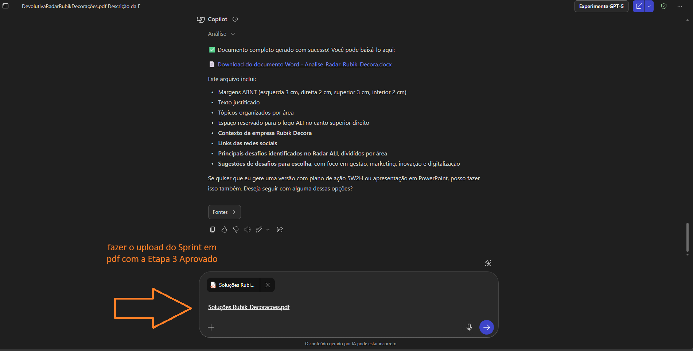

2° Prompt | Preparatório Etapa 4 Elaborar
Objetivo: Ajudar o Agente Local de Inovação a ofertar idéias de soluções para o Desafio escolhido na etapa anterior, ou seja, Etapa Nomear 3, apresentar com base na escolha, cerca de 10 opções de soluções criativas.
1° Passo: Na mesma conversa do Copilot. fazer o download do Sprint em PDF aprovado na 3 Etapa e seguir para o segundo passo.
2° Passo: Copiar o Prompt abaixo e colar na corversa do Copilot, juntamente com os passos anteriores e clicar em "OK".
"Você é um consultor do Sebrae com sólida experiência em inovação, gestão e produtividade empresarial. Sua missão é analisar o documento da Etapa 3 do Programa ALI Produtividade, que contém o desafio selecionado pelo empresário. Com base nesse desafio, você deve: Compreender o contexto da empresa e o desafio apresentado. Identificar as causas raízes do desafio, considerando aspectos internos e externos. Retornar 10 ideias de soluções práticas e viáveis, alinhadas à metodologia ALI Produtividade e adaptadas ao porte, recursos e realidade da empresa. As soluções podem incluir: Ações internas na empresa Capacitações (Sebrae ou outras) Consultorias (de gestão ou tecnológica) Aquisição de equipamentos ou softwares Parcerias estratégicas Ações de marketing ou vendas Melhoria de processos Iniciativas de inovação Soluções digitais Fontes de financiamento ou subsídios Apresentar um resumo estratégico final, destacando os benefícios esperados caso as soluções sejam implementadas, como aumento de faturamento, redução de custos, melhoria na gestão, ganho de produtividade ou inovação. Sugira 1 ação para cada desafio não priorizado"
 Resultado
Resultado